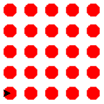
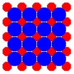

3. For loops#
Wanneer je van tevoren al weet hoe vaak je een blok code wilt herhalen, is een while loop enigszins omslachtig. Je hebt er namelijk drie regels code voor nodig:
één om de teller variabele te maken met een assignment statement;
één waarin het keyword
whilestaat, gevolgd door de voorwaarde(n);één waarin de waarde van de teller variabele wordt bijgewerkt.
n = 0
while n < 10:
...
...
n = n + 1
Je kunt dit gemakkelijker doen met een for loop. Dat wil niet zeggen dat je een while loop nooit nodig hebt. Er zijn situaties waarin een for loop niet werkt en een while loop wel.
Wat leer je in dit hoofdstuk
Wat doet de functie
range().Hoe maak je een for loop met de functie
range().
3.1. De functie range()#
Met de functie range() kun je een serie opeenvolgende getallen genereren. Om die serie zichtbaar te maken in de CLI, hebben we ook de functie list() nodig:
>>> list(range(5))
[0, 1, 2, 3, 4]
>>> list(range(9))
[0, 1, 2, 3, 4, 5, 6, 7, 8]
Je ziet dat range(n) de getallen 0 tot en met n-1 genereert. Meestal is dit voor ons doel (een for loop) voldoende, maar het is mogelijk om aan range() drie parameterwaarden mee te geven:
- range(start, stop, step)#
Retourneert een reeks getallen, die standaard bij 0 begint, telkens met 1 ophoogt en stopt juist voor het meegegeven getal.
- Parameters:
Het startgetal van de serie. Niet verplicht; standaardwaarde is 0.
Het stopggetal van de serie. Verplicht.
De stapgrootte. Niet verplicht; standaardwaarde is 1.
- Returnwaarde:
Een serie getallen. Om de serie te tonen in de CLI heb je de
list()functie nodig.- Voorbeelden:
3.2. For en range#
De functie range wordt vaak gebruikt in for loops. Dat ziet er zo uit:
1for i in range(5):
2 print(i)
Je kunt regel 1 lezen als: voor elke waarde van i in de reeks 0 t/m 4, doe het volgende. De variabele i krijgt dus achtereenvolgens de waarden 0, 1, 2, 3 en 4. In de output van het programma zie je dit terug:
0
1
2
3
4
Uiteraard is niet verplicht om de waarde van i binnen de for loop te gebruiken:
1for i in range(5):
2 print('Hello, World!')
Het resultaat:
Hello, World!
Hello, World!
Hello, World!
Hello, World!
Hello, World!
Wanneer je een for loop gebruikt voor het tekenen van een vierkant met Python turtle, heb je minder coderegels nodig dan wanneer je dat met een while loop doet:
3.3. Opdrachten#
Opdracht 01
Hieronder zie je code waarmee de turtle een driehoek tekent. Als je de opdrachten over while loops hebt gemaakt, beschik je al over deze code in het bestand driehoeken.py. Zo niet, kopieer dan onderstaande code naar een nieuw bestand driehoeken.py.
1# For loops - opdracht 01
2
3import turtle
4
5tony = turtle.Turtle()
6
7zijde = 0
8while zijde < 3:
9 tony.fd(100)
10 tony.lt(120)
11 zijde = zijde + 1
Vervang de while loop in deze code door een for loop.
Opdracht 02
Maak een nieuw bestand in Mu editor, kopieer onderstaande de code erin en sla het op onder de naam turtle_dots_for.py.
1# For loops - opdracht 02
2
3import turtle
4
5tony = turtle.Turtle()
6tony.speed(0)
7tony.up()
8
9for rij in range(5):
10 for kolom in range(5):
11 tony.dot(20, 'red')
12 tony.fd(30)
13 # Stuur tony naar het begin van de volgende rij:
14 tony.bk(5*30)
15 tony.lt(90)
16 tony.fd(30)
17 tony.rt(90)
18
19tony.home()
Dit programma tekent een rooster van 5 bij 5 rode dots. De opdracht tony.home() in regel 17 zorgt ervoor dat de turtle weer teruggaat naar het beginpunt. De output van het programma ziet er zo uit:

Voeg aan het programma na regel 19 code toe waarmee een rooster van 4 bij 4 blauwe dots met een grootte van 30 pixels wordt getekend, die precies tussen de rode dots in komen:

Pak dit handig aan. Je zou bijvoorbeeld de regels 9 t/m 17 kunnen kopiëren en aanpassen.
Opdracht 03
Maak een nieuw bestand, kopieer onderstaande code erin en sla het op als turtle_spiral.py.
1# For loops - opdracht 03
2
3import turtle
4
5tony = turtle.Turtle()
6tony.speed(0)
7
8for i in range(300):
9 tony.fd(i * 2)
10 tony.lt(30)
Deze code tekent eerst een lijnstukje van 0 pixels, vervolgens een lijnstukje van 2 pixels, dan 4 pixels, dan 6 pixels, enzovoort tot het laatste lijnstukje van 598 pixels (299 * 2). En tussendoor draait de turtle telkens 30 graden. Kijk maar eens wat dat oplevert, door het programma te runnen.
Experimenteer met de code in turtle_spiral.py door telkens één getal te veranderen en te bekijken hoe de figuur verandert. Je zou tony bijvoorbeeld telkens 91° kunnen laten draaien in plaats van 30°. En wat gebeurt er als je op regel 10 tony.lt(30) vervangt door tony.lt(i) of tony.lt(i * 3)? Probeer maar uit!